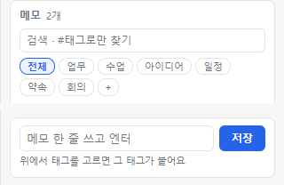
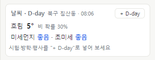
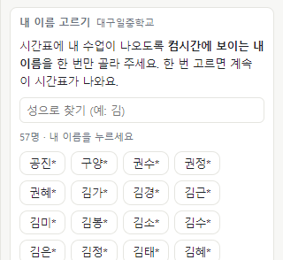

대구일중 사이드바
화면 오른쪽 끝에 숨어 있다가 마우스를 대면 펼쳐지는 업무 도우미입니다.
시간표, 급식, 마감 일정, 메모, 자주 여는 프로그램을 창을 바꾸지 않고 한 번에 보고 싶었습니다. 이렇게 쓰면 편할 것 같아서 만들어 봤습니다.

오늘
아침에 한 번 펼쳐 보면 오늘 할 일이 다 보입니다.

시간표와 급식
이번 주 시간표가 컴시간에서 바로 들어옵니다. 오늘은 파란 열, 지금 교시는 파란 띠로 보여요.
노란 칸은 바뀐 수업입니다. 마우스를 올리면 원래 수업이 나와요.
시간표 위 버튼으로 우리 반, 다른 반, 다른 선생님 시간표를 바로 바꿔 볼 수 있어요. 담임이시면 우리 반을 처음 화면으로 둬도 됩니다.
아래에는 오늘 중식이 알레르기 번호 없이 나옵니다.

마감 일정
할 일을 마감일 순으로 줄 세웁니다. 사흘 안이면 주황, 당일이면 빨강으로 바뀌어요.
마감 3일 전, 1일 전, 당일 아침 8시에 윈도우 알림이 옵니다. 끝낸 일은 체크하면 아래로 내려가요.

공문 캡처로 추가
공문, 메신저, 안내문에서 날짜가 있는 부분을 드래그하면 AI가 할 일, 날짜, 제출처를 카드로 뽑아 줍니다.
틀린 곳만 고치고 저장을 누르면 일정에 들어가요. 날짜를 못 찾은 카드는 날짜 칸이 비어 있으니 직접 넣어 주세요.
무료 Gemini는 보낸 화면이 Google 제품 개선에 쓰일 수 있습니다. 학생 이름이 보이는 화면은 도구 장의 글자만 복사를 쓰세요.
일정 · 메모
학교 일정과 내 일정을 한 화면에서, 떠오른 건 한 줄로.

달력
나이스 학사일정(노랑), 구글 캘린더(파랑), 내 마감 일정(빨강)이 한 달력에 같이 나옵니다.
위 버튼으로 하나씩 켜고 끌 수 있어요. 기본은 이번 주 목록이고, 월간을 누르면 한 달이 보입니다.
구글 캘린더는 설정에서 내 계정을 한 번 연결해야 나와요.

메모
한 줄 쓰고 Enter면 저장됩니다. 위에서 고른 태그가 같이 붙어요.
검색창에 #회의처럼 쓰면 그 태그만 모아 봅니다. 잘못 지웠으면 5초 안에 되돌리기를 누르세요.
도구
매일 몇 번씩 하는 손일을 줄여 주는 칸입니다.


날씨와 바로가기
학교 동네 날씨, 비 소식, 미세먼지가 한 줄로 나옵니다. 오후에 비가 오면 몇 시부터인지도 알려 줘요. 시험이나 행사까지 남은 날은 D-day로 걸어 둘 수 있습니다.
바로가기에는 프로그램, 폴더, 파일을 끌어다 놓으면 버튼이 생기고, 사이트는 주소만 붙여 넣으면 됩니다. 처음에는 Claude, ChatGPT, Gemini, 업무포털, 네이버가 깔려 있어요.
여러 개를 묶어 두면 버튼 하나로 업무포털, 메신저, 한글을 한꺼번에 엽니다. 업무포털은 페이지 열기까지만 하고 인증서 비밀번호는 저장하지 않아요.

클립보드와 복사 도구
복사한 글이 최근 10개까지 남습니다. 누르면 다시 복사되고, 자주 쓰는 건 핀으로 고정해 둬요.
글자만 복사는 드래그한 화면의 글자를 윈도우 글자 인식으로 읽어 복사합니다. 인터넷으로 보내지 않아서 학생 이름이 있는 화면도 괜찮아요.
오늘 날짜 복사를 누르면 2026. 10. 29.(목) 모양으로 복사됩니다. 한글에서 Ctrl+V만 하면 돼요.
처음 켤 때
- exe를 두고 더블클릭
대구일중-사이드바.exe를 바탕 화면이나 내 문서에 두고 켭니다. 설치는 없어요. "PC 보호" 창이 뜨면 추가 정보 → 실행을 누르세요.
- 내 이름 한 번 누르기
컴시간에 보이는 내 이름(끝 글자는 *)을 성으로 찾아 누르면, 다음부터 바로 내 시간표가 나옵니다. 수업이 없으시면 '수업이 없어요'를 누르세요.
- 오른쪽 끝에 마우스
파란 띠에 마우스를 대면 펼쳐집니다. 윈도우를 켤 때 같이 켜지게 하려면 톱니(설정)에서 자동 실행을 켜세요.

키는 필요한 분만
아무 키 없이도 시간표, 급식, 학사일정, 메모, 바로가기, 클립보드는 바로 됩니다.
공문 캡처는 Gemini 키, 날씨와 미세먼지는 공공데이터포털 키가 있어야 나와요. 둘 다 무료로 받을 수 있고, 설정에 붙여 넣으면 이 PC에만 저장됩니다.
알아 두실 점
- 일정, 메모, 바로가기는 내 문서\대구일중-사이드바 폴더에 저장됩니다. 구글 드라이브 폴더로 바꾸면 다른 PC에서도 같이 볼 수 있어요.
- 컴시간 연결은 공식 연결이 아니라서 컴시간 쪽이 바뀌면 시간표가 잠시 안 나올 수 있습니다. 그때는 마지막으로 받은 시간표를 보여 줘요.
- 켤 때 몇 초 걸리고, 작업 표시줄에는 나오지 않습니다. 끌 때는 펼친 뒤 오른쪽 위 × → 끄기를 누르세요.
- 자세한 사용법은 사용법 파일에 따로 정리해 두었습니다.